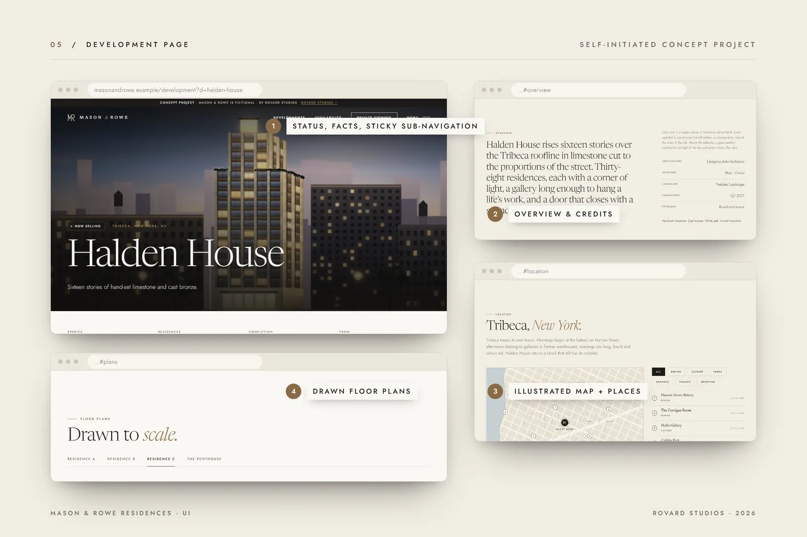

Mason & Rowe Residences
Site Web pour un promoteur de maisons de luxe fictif.

Aperçu
Un site immobilier de luxe adaptatif pour un promoteur américain fictif : une arrivée cinématographique, une interface de propriétés avec plans d'empilement interactifs et plans d'étage dessinés, et un parcours de réservation de visites privées.
- Sites Web et applications
- 2026
- Design UX/UI / Conception de site Web / Direction artistique / Développement front-end
- Immobilier de luxe / Promotion immobilière
- Projet conceptuel autoproduit
Le défi
Les sites immobiliers enterrent souvent la maison sous des filtres de recherche et des photos de banque d'images. Le mandat : une expérience éditoriale qui donne l'impression d'une monographie d'architecture à l'arrivée, puis devient pratique : où est-ce, comment est-ce à l'intérieur, quelle résidence est encore disponible et comment la visiter?
Direction de création
Onze pages partagent un même système de design. La page d'accueil est une séquence lente et cinématographique; chaque page de projet comprend une galerie, des plans d'étage générés à partir de données, des spécifications, une carte illustrée du quartier et un plan d'empilement interactif avec un panneau d'unité. La réservation se fait en trois étapes paisibles avec un calendrier sur mesure. Sur téléphone, l'expérience est reconstruite plutôt que réduite, avec un menu plein écran et une barre fixe de demande et de visite.
Développement
Applications
Un front-end fonctionnel à explorer : ouvrez un projet immobilier, filtrez le plan d'empilement, lisez un plan dessiné et réservez une visite privée de bout en bout. Concept autoproduit; Mason & Rowe est fictif et chaque projet, prix, unité et lieu est illustratif. Rien de ce que vous saisissez n'est envoyé nulle part.
Présentation finale
Crédits
- ROVARD STUDIOS
- Design UX/UI / Conception de site Web / Direction artistique / Développement front-end
- Projet conceptuel d'initiative personnelle. Il ne s'agit pas d'un travail pour un client.

Vous avez quelque chose de semblable en tête ?
Que vous lanciez quelque chose de nouveau, bâtissiez une marque ou cherchiez un regard créatif neuf, explorons ensemble ce que nous pouvons créer.
Démarrer un projet